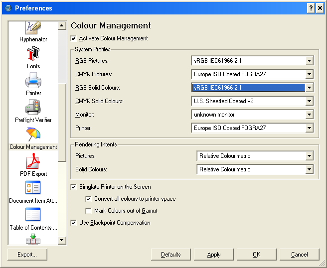

The color management function needs the following to be installed to be active and usable:
The objective of a color management system is to reduce the differences between the on-screen colors and final printing, as well as showing colors which are out of gamut, beyond the color range of your selected printer. The caveat is you need to provide a profile of the printer and one for your monitor which is reasonably accurate. For users of other applications, the default settings and descriptions can be quite confusing to new users. Without prior knowledge of the terminology, it is very easy to choose the wrong settings. This can often makes images look worse on screen or print. Then, the first time user simply says enough and disables color management.
In a word don't. Once you understand some basic concepts and know your final print destination, you will be able to predict - and - control more reliably how your document will look when printed. This is especially helpful when you will be sending files for later reproduction with four color printing or sending hi-resolution PDFs. The type of color management support within Scribus, I believe, is the first for an open source program. Future enhancements will bring even more exact control over color reproduction. The latest CUPS versions since 1.1.15+ now have support for true CMYK color printing. The newest version of little cms 1.14 has many new features which enhance the capabilities of Scribus to more accurately display color, along with much better performance. If you have 1.09, an upgrade is recommended - the previews in Scribus are more accurate.
The steps to making color management work reliably (what you see on screen is what you print) :
The color management system within Scribus is designed foremost for enabling color managed "soft proofs" of the images within the document. Scribus can also show "out of gamut" warnings for colors which might not be accurately reproduced by printing. (Most printers, have a narrower range of colors which can be printed, when compared to most monitors.) It does not embed or alter the profiles within your images. Some image files, png and Tiff, helpfully, can have an embedded icm or icc profile within the file header - also known as tagged, with a color profile. Later on, we will describe how and when it might be appropriate to use littlecms or Photopaint to apply a tag or embed a profile. If a file is tagged, Scribus will work with littlecms to read that profile within the image and use that profile to more accurately display the colors within an image. If an image does not have a tag but you know the device profile which should be assigned to the image, you can still use the CMS settings to preview with the profile temporarily assigned within the document. Caution is advised not to assign the wrong profile unless you are absolutely sure of the image source.
The littlecms package is really remarkable considering the amount of development work done by large companies such as Kodak, Adobe, Agfa and other and the, so far, limited user acceptance. See these hints on creating an ICC profile for your monitor.
What are color or device profiles?
ICC or icm profiles are a special type of file which describes the color characteristic of a device like a scanner, monitor or printer - basically any device which can create or display manipulate the color of a digital image. There are also color profiles which are known as device independent or working space profiles. These special files can be thought of as translators which are used to convert from one type of color profile to another. An ICC or icm file is a set of tables which describes the mathematical values by which devices measure and describe color. Fortunately, these are set by open international standards and work the same way on a Mac, Windows PC, Linux or Solaris.
Device Profiles - are separate files which describe the way a device creates (scanner or digital camera), displays (monitor) or outputs (printer) colors. Users of of Photoshop will be familiar with the choice of Working Profiles or Working Space - which are color profiles not related to a particular device, but to assist in the conversion of color from one device to another. Well known RGB "working spaces" Include sRGB, Adobe® RGB 1998, Colormatch,Bruce RGB or CIERGB. Users of Photoshop or other color may be wondering if this is a missing feature, but littlecms uses its own internal color conversion process to make the transformation between color spaces. One less setting to worry about!
|  |
Why "soft proofing" ? With the proper setup of device profiles, littlecms can adjust the colors of your monitor to more accurately represent how your document will actually look when finally printed., This can be doubly helpful if you are sending it to be printed commercially or for service bureau output. Moreover, each image can be individually modified by Scribus to assign profiles in an image, ( Select image > right click > Modify ) so that it can be properly color managed in document production, such as preparing film, a PDF/X-3 or direct to plate technologies. This does not however, alter the image file internally. Preview profiles assigned to an image are part of the setting retained in a Scribus document or in the creation of a PDF. There is also are command line tools in littlecms to embed profiles with tifficc and jpegicc. See the littlecms docs for exact options. You can also embed ICC profiles using Imagemagick.